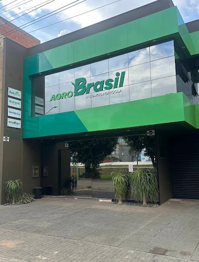
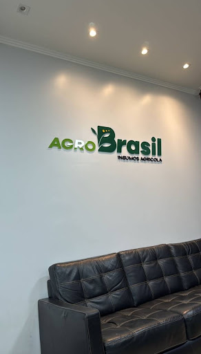

Biotecnologia e
Inteligência Agronômica
para a Produtividade do Futuro
Insumos agrícolas de alto rendimento, manejo biológico integrado, nutrição vegetal molecular e presença consultiva direta na lavoura. Elevando os índices produtivos de soja, milho e grãos em escala no coração do agronegócio nacional.
Monitorados e chancelados tecnicamente
Eficiência de manejo nutricional & bio
Presença direta de agrônomos na área
Liderança e distribuição regional segura
Infraestrutura Sólida e Compromisso com o Produtor
Capacidade logística com agilidade de entrega, armazenagem técnica climatizada e equipe multidisciplinar focada no sucesso da sua safra.

Complexo de Distribuição & Atendimento
Pronta resposta para o escoamento rápido de insumos e biológicos
Instalações preparadas para o acondicionamento de alta precisão de defensivos químicos, sementes certificadas e bioinsumos vivos que demandam controle térmico rigoroso e rastreabilidade total de lote.

Espaço Consultivo para o Produtor
Nossa matriz foi desenhada para receber o produtor e seus consultores em rodadas técnicas de alinhamento de safra, negociação transparente e compra programada.
Consultoria Técnica Especializada & Presença Ativa no Campo
Nossos engenheiros agrônomos atuam lado a lado com o produtor rural, realizando diagnósticos minuciosos de solo, desenvolvimento foliar, sanidade de entrenós e estratégias biológicas para cada talhão.

Comitiva Técnica Multidisciplinar
Vistoria de grandes extensões de cultivo com maquinário e suporte logístico em tempo real.
Acompanhamento Coletivo
Alinhamento prático de protocolos com as equipes de fazenda

Checagem de Vigor & Raiz
Análise tátil da estrutura de solo e compactação nas entrelinhas.
Aferição de Estande
Conferência de uniformidade emergencial e espaçamento foliar ótimo.

Monitoramento de Baixeiro
Inspeção minuciosa para controle antecipado de ferrugem, mancha-alvo e pragas sugadoras.

Transferência de Conhecimento Técnico
Orientação direta e individualizada sobre doses ideais, adjuvantes e horários de pulverização.
Coleta e interpretação geoespacial de tecido foliar e fertilidade do solo, corrigindo micronutrientes antes de perdas visíveis de biomassa.
Consórcio entre defensivos de síntese química seletiva e bactérias entomopatogênicas de última geração, quebrando resistências.
Histórico estruturado de aplicações, comparativo de safras passadas e projeção acurada de produtividade em sacas por hectare.
Engenharia de Raiz & Sanidade Vegetal de Alta Performance
O segredo das produtividades recordes reside no que os olhos comuns não veem: biologia subterrânea vigorosa, inoculação profunda e arquitetura radicular exploratória.

Formulação avançada com ácidos fúlvicos e extratos de algas marinhas que estimulam o pivotante primário a buscar umidade em camadas freáticas inferiores, amenizando o impacto de veranicos severos.
Inoculação com cepas bacterianas ultra-viáveis que aceleram a formação precoce de nódulos na coroa radicular, garantindo suprimento contínuo de nitrogênio biológico sem custo de adubo nitrogenado sintético.
Nutrição foliar com fósforo fosfatado, boro organomineral e zinco quelatizado que previnem o abortamento floral em estágios reprodutivos R1 e R2, expandindo a carga de vagens até a ponteira da planta.
Insumos de Alta Performance & Manejo Integrado
Soluções completas com registros oficiais, alto rigor de purificação e suporte do nosso time técnico para aplicação correta na sua lavoura.
BioMax NoduForce
Inoculante líquido com altíssima concentração de Bradyrhizobium japonicum e bioestimulantes de arranque radicular.
PhosActive K+
Fosfito de potássio sistêmico com aminoácidos livres para indução de fitoalexinas e transporte de fotoassimilados.
NematoClean B.
Consórcio de Bacillus subtilis e Bacillus amyloliquefaciens para proteção ativa contra nematoides das galhas e cisto.
AgroShield Pro
Inseticida e fungicida com formulação inovadora de rápida penetração cuticular e excelente efeito residual.
Boro-Zinco Max Chelate
Complexo quelatizado com ácidos carboxílicos que eliminam a queima de folhas e maximizam a viabilidade do grão de pólen.
Sementes Certificadas Alto Vigor
Cultivares selecionadas para máxima estabilidade no Cerrado com tratamento industrial fungicida e inseticida de fábrica.
Calcule o Potencial de Incremento da sua Lavoura
Veja a estimativa de ganho produtivo e financeiro ao aplicar o pacote integrado de biotecnologia e manejo agronômico da Agro Brasil.
*Cálculos embasados na média ponderada de ensaios a campo em mais de 150.000 hectares com manejo biológico de solo e nutrição foliar quelatizada.
Perguntas Frequentes sobre Insumos & Safra
Esclarecimentos diretos sobre compatibilidade, armazenagem e atendimento técnico.
Nossa equipe de agrônomos realiza visitas periódicas na sua propriedade para diagnóstico de solo, monitoramento de pragas e doenças, aferição de estande e acompanhamento da aplicação de caldas. Não somos apenas distribuidores de produtos: somos parceiros de ponta a ponta na sua safra.
Sim. Por se tratarem de organismos vivos de alta viabilidade celular, mantemos nossa estrutura de armazenagem com controle rigoroso de temperatura e umidade. Na entrega, nossa frota é preparada para assegurar que o produto chegue com 100% de atividade biológica à sua fazenda.
Trabalhamos com estoque regulador dimensionado para a demanda regional e plantão logístico 24/7. Em situações de reposição emergencial no plantio, atendemos com despachos imediatos para que sua operação de semeio ou pulverização nunca fique parada.
Você pode clicar diretamente em qualquer botão de WhatsApp deste site ou preencher o formulário abaixo. Nossa equipe entrará em contato em poucos minutos para direcionar o agrônomo responsável pela sua microrregião.
Plantão Técnico de Safra
Assistência 24/7 em Períodos Críticos
Durante os picos de dessecação, plantio e colheita, nossa equipe trabalha em regime contínuo para suporte emergencial de insumos.
Sede e Complexo Logístico
Polo Agroindustrial — Mato Grosso / Brasil
Centro de suprimentos estrategicamente posicionado no corredor de maior relevância agrícola do país, com pátio para carregamento veloz.
Garantia & Procedência
Registro MAPA & Certificação BioAgrícola
Representação oficial e distribuição autorizada de marcas de prestígio global com laudos laboratoriais e rastreabilidade assegurada.
Solicite Atendimento de um Agrônomo
Preencha os dados da sua propriedade e envie diretamente para o nosso WhatsApp com um clique.